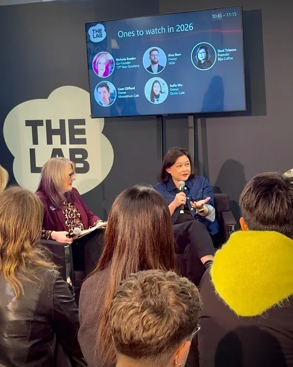
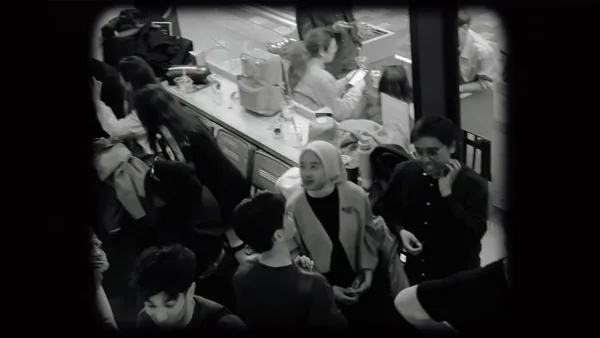
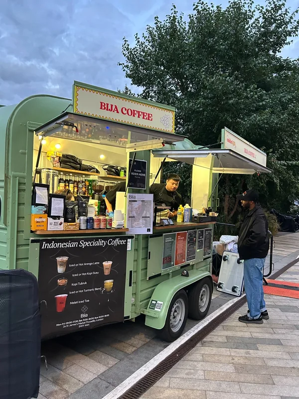
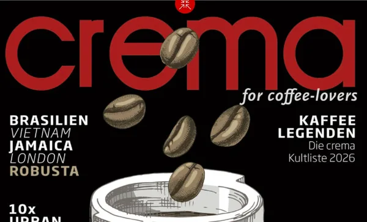
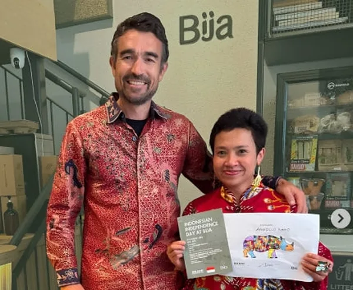
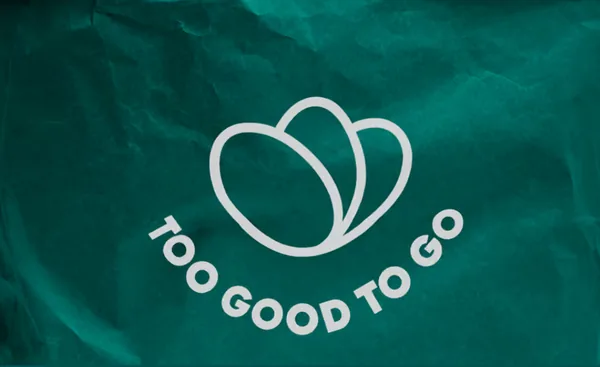
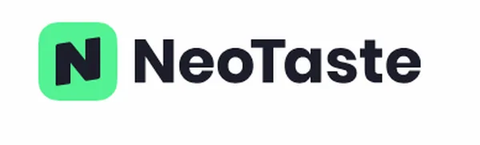
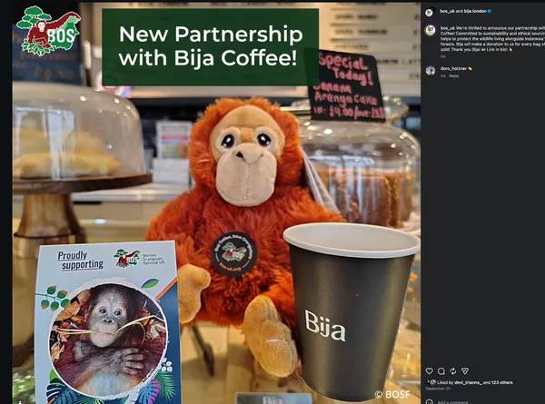
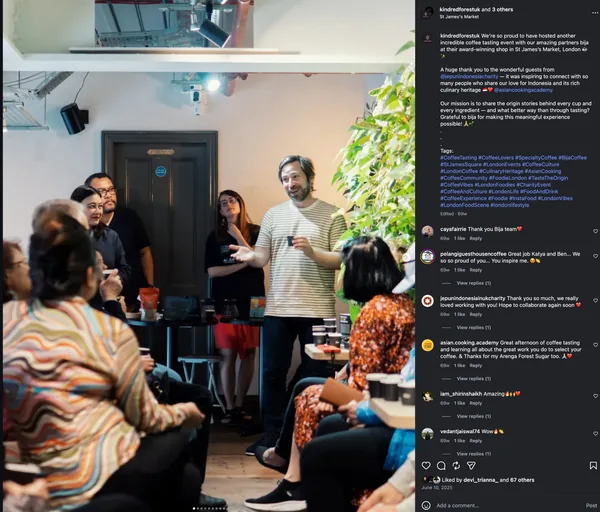

Devi at The Lab, LCF 2026
Sharing Bija’s story at the festival’s Ones to Watch session.




Run clubs, cyclists, neighbours and musicians all find their way to Bija. These are the gatherings and friendships that have become part of café life.

A London Coffee Festival milestone, shared with everyone who made Bija part of their day.

Sharing Bija’s story at the festival’s Ones to Watch session.

Stories about Bija in Crema, Sprudge, Kompas.com and DW.

Marking Indonesia’s Independence Day with Edge Group Conservation.
A run, a coffee and a reason to connect, well beyond the counter.
Movement, shared heritage and conversations that carry on over coffee.

A meeting point for London’s cyclists, coffee part of the ride.

Good food gets another chance in our Surprise Bags.
DJ nights, album launches and gatherings that give the café another rhythm.

A DJ session at the café, with a special offer for NeoTaste members.
Bringing kopi to London’s celebration of Asian culture.

Supporting the work to protect Borneo’s orangutans and their forest.

A tasting of Indonesian coffees with our roasting partner.
A different rhythm at Bija: coffee, friends and new sounds sharing the room.
A gathering, a creative night, a collaboration? Tell us what you have in mind.